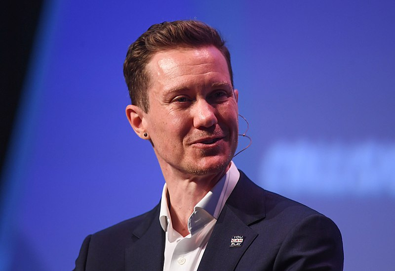

Chris Mosier Tribute Page

Chris Mosier smiling and talking at a conference
Chris Mosier is an American transgender advocate and triathlete. He started his athletic career before transitioning, started his transition in 2010, and in 2015 earned a spot on the Team USA sprint duathlon men's team for the 2016 World Championship, making him the first known out trans athlete to join a U.S. national team different from his sex at birth.